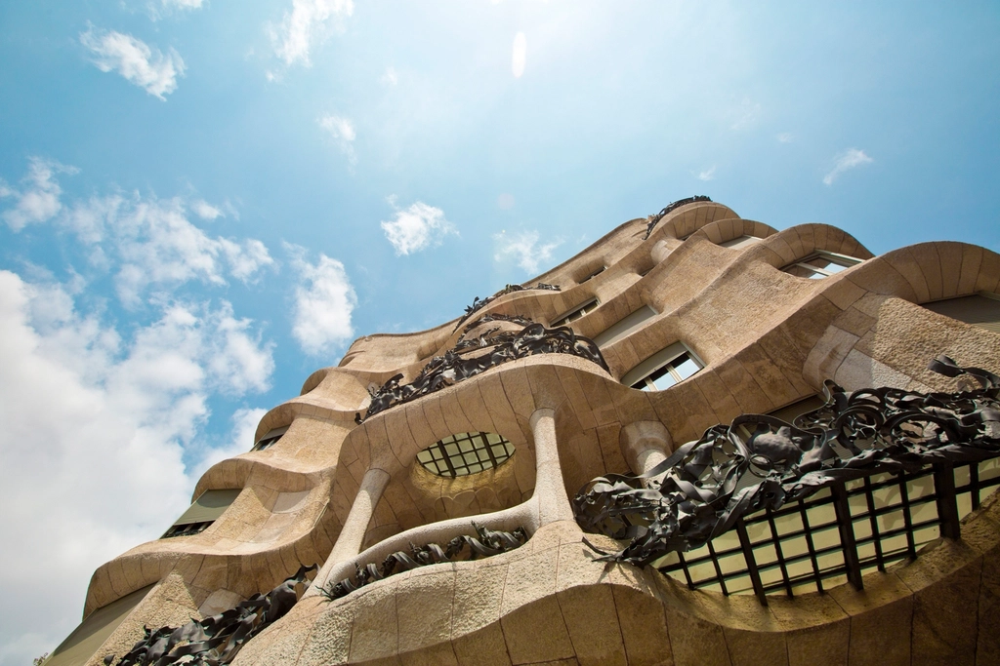
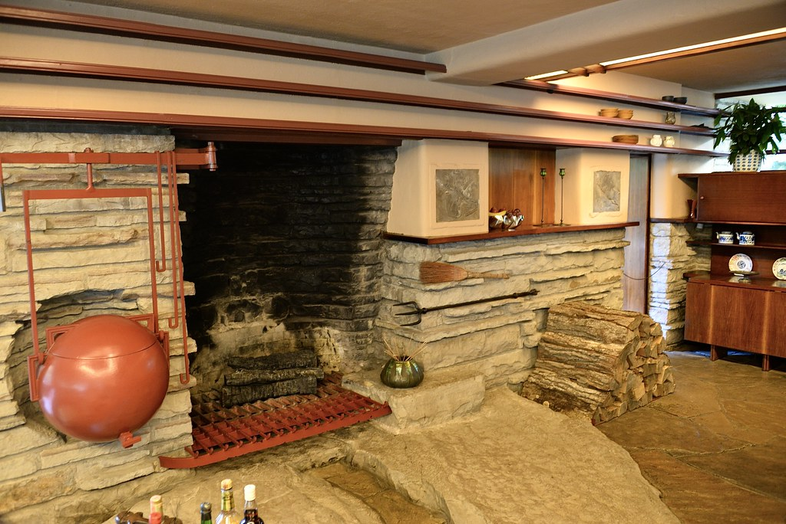
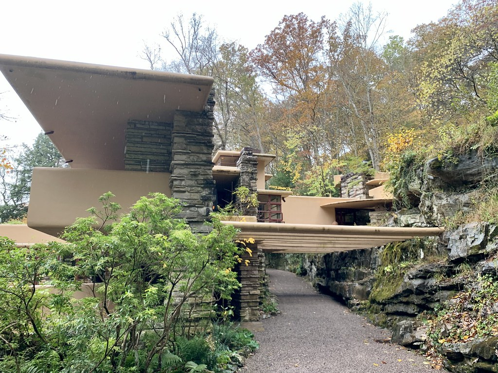
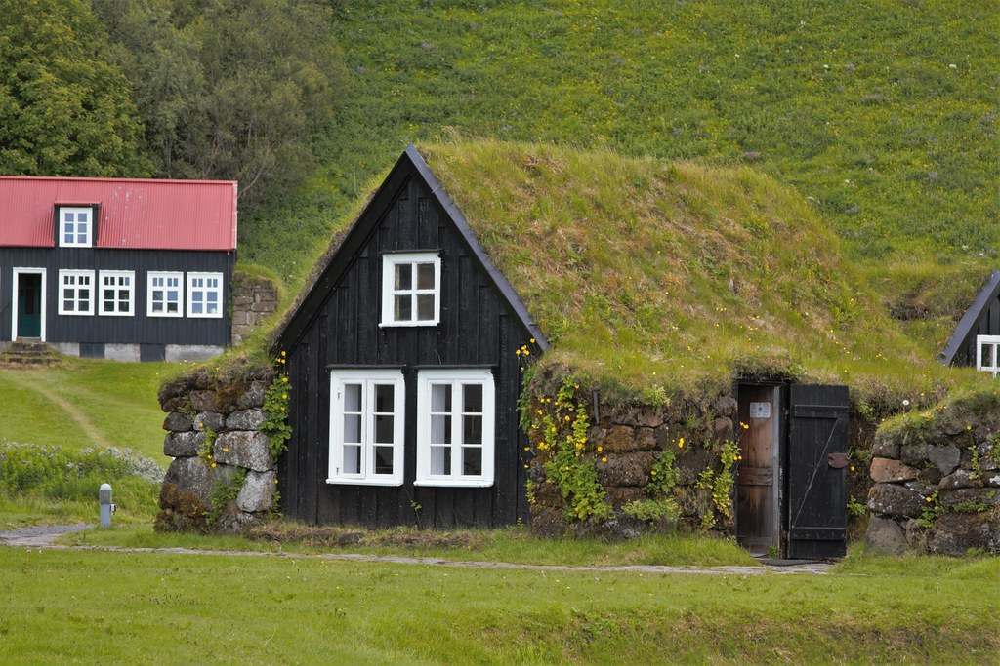

2024
Bảo Lộc, Lâm Đồng
Earth House
Nhà ở trên đồi, tường đất nện chạy theo đường đồng mức, mái phủ cỏ nối liền sườn dốc.
Xem chi tiết
Minh An, kiến trúc sư · FORM / SPACE
Nhà ở uốn theo địa hình, dựng từ đất, đá, gỗ và đón ánh sáng tự nhiên vào từng không gian.
Một ngôi nhà tốt không đặt lên mảnh đất, nó mọc lên từ đó. Trước khi vẽ đường nét đầu tiên, Minh An dành nhiều ngày ở khu đất: đo hướng gió, nhìn nắng đi qua sườn đồi, chạm vào lớp đất sẽ trở thành bức tường.
Đường cong trong các thiết kế của chị không phải để trang trí. Đó là đường đồng mức của địa hình, là lối đi của nước mưa, là cách một bức tường ôm lấy ánh sáng chiều.

Đọc triết lý thiết kế“Tôi muốn mỗi công trình sau mười năm trông như nó vẫn luôn ở đó.”
2024
Bảo Lộc, Lâm Đồng
Nhà ở trên đồi, tường đất nện chạy theo đường đồng mức, mái phủ cỏ nối liền sườn dốc.
Xem chi tiết
2023 · Hội An, Quảng Nam
Nhà sân vườn nhiệt đới quây quanh một khoảng sân lặng, nơi mưa và nắng đi vào giữa nhà.
Xem chi tiết2025 · Ven biển Quy Nhơn
Công trình ven biển bằng đá chẻ và bê tông điêu khắc, các tầng mái vươn ra như mỏm đá đón gió.
Xem chi tiết

2022 · Đà Lạt, Lâm Đồng
Mái xanh liền một dải với đồi cỏ phía sau. Nhìn từ xa, ngôi nhà gần như biến mất vào cảnh quan.
Xem chi tiếtCác dự án là nội dung giả lập để minh họa hướng thiết kế. Ảnh lấy từ thư viện ảnh mở.
Ba chặng làm việc, mỗi chặng bắt đầu bằng việc quay lại khu đất.
Xem quy trình đầy đủĐo cao độ, hướng nắng, hướng gió và dòng nước mưa. Lấy mẫu đất để thử làm tường.
Phác thảo bằng tay và mô hình đất sét, tìm hình khối nằm yên trên đường đồng mức.
Sắp xếp phòng theo đường đi của ánh sáng trong ngày, chọn vật liệu có sẵn quanh khu đất.
Năm chất liệu lặp lại trong mọi dự án. Mỗi chất liệu được ghi chép như một nghiên cứu riêng.
Xem nghiên cứu vật liệuNhận 3 dự án nhà ở mới mỗi năm, ưu tiên khu đất có địa hình tự nhiên.